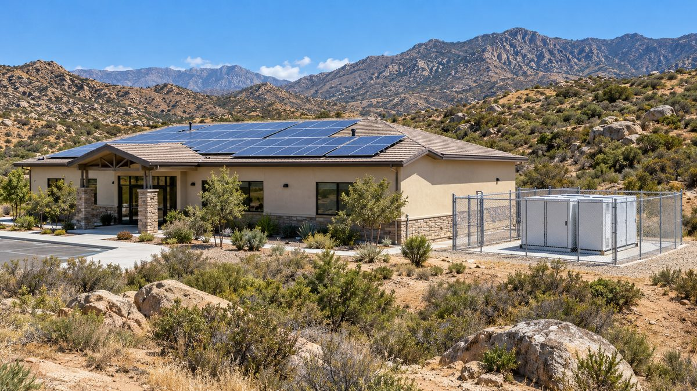

미국 캘리포니아 메사그란데 부족, 행정동 3곳에 태양광·배터리 마이크로그리드…산불 예방 단전 때도 부족 대피처로

부족이 소유·운영하고 태양광 자격을 딴 부족원이 시공에 참여…전기요금 연 1만6,780달러 이상 절감 예상, 새 주택 1,500호에도 같은 방식 계획
미국 남캘리포니아 샌디에이고 서쪽 산지의 메사그란데 부족(Mesa Grande Band of Diegueño Mission Indians)이 부족 행정동 3곳에 태양광과 배터리를 갖춘 마이크로그리드를 완공했다. 보호구역에 사는 부족원 약 200명은 전력회사 SDG&E가 강풍 때 산불을 막으려고 하는 '공공안전 단전'으로 며칠씩 전기가 끊기는 일을 자주 겪어 왔고, 지금도 2가구는 작은 발전기에만 기대어 산다. 새 설비는 테카무크 행정동에 태양광 11.5kW·배터리 30kWh, 할례야우에 10.37kW·20kWh, 골든이글에 12.45kW·20kWh 규모로, 단전 때도 부족 행정이 멈추지 않고 취약 주민이 휴대전화를 충전하고 끼니와 소식을 얻는 대피처가 된다. 설비는 부족이 소유·운영하며, 비영리 단체 '태양광 전기 빛 기금(SELF)'이 설계·재원 마련·시공 감독을 돕고 태양광 설치 자격을 따 둔 부족원들이 시공에 참여했다. 부족은 이 설비로 전기요금을 해마다 최소 1만6,780달러 아끼고 이산화탄소를 연 약 18t 줄일 것으로 내다보며, 연 30만 달러가 안 되는 연방 지원금으로 꾸려 가는 살림에서 아낀 돈을 주택 건설 등에 쓸 계획이다. 커티스 라추사(Curtis La Chusa) 부족 평의회 의장은 "가장 취약한 이들에게 안전한 공간이 될 수 있게 됐다"며, 새로 확보한 560에이커 땅에 지을 주택 1,500호도 태양광·배터리 마이크로그리드로 전기를 대고 부족원이 설비를 관리하는 유지보수 프로그램도 만들 계획이라고 밝혔다.
시민에너지 관점
해마다 1만6,780달러 이상의 요금 절감은 연 30만 달러가 안 되는 부족 정부 예산의 5%를 넘는 몫으로, 작은 공동체에서는 에너지를 스스로 가지는 것이 곧 살림과 자치의 여력이 된다는 점을 보여 준다. 행정동 지붕 몇 곳의 태양광으로 무엇이 달라지느냐는 의문이 있을 수 있지만, 이 설비의 값어치는 용량보다 단전과 재난 때 공동체가 기댈 거점을 공동체 스스로 지킨다는 데 있다. 설비를 공동체가 소유하고 공동체 구성원이 직접 시공하고 관리하니, 아낀 돈과 일자리가 바깥으로 새지 않고 다음 주택 사업으로 이어진다. 국내에서도 산불·폭염·정전에 취약한 농산촌 마을회관과 경로당에 태양광과 저장장치를 마을 소유로 갖추고, 주민이 유지보수를 맡는 재난 대비 거점 사업을 서둘러야 한다.
출처: Microgrid Knowledge 2026-10-29 Kathy Hitchens 원문 보기
米カリフォルニアのメサグランデ族、行政棟3カ所に太陽光・蓄電池マイクログリッド…山火事予防の停電時も部族の避難所に
部族が所有・運営し太陽光の資格を持つ部族員が施工に参加…電気代は年1万6,780ドル以上の節約見込み、新たな住宅1,500戸にも同じ方式を計画
米南カリフォルニア、サンディエゴ西方の山地に暮らすメサグランデ族（Mesa Grande Band of Diegueño Mission Indians）が、部族の行政棟3カ所に太陽光と蓄電池を備えたマイクログリッドを完成させた。保留地に住む約200人の部族員は、電力会社SDG&Eが強風時に山火事を防ぐため行う「公共安全停電」で数日にわたり電気が止まることをたびたび経験してきており、今も2世帯は小型発電機だけに頼って暮らしている。新設備はテカムク行政棟に太陽光11.5kW・蓄電池30kWh、ハリェヤウに10.37kW・20kWh、ゴールデンイーグルに12.45kW・20kWhの規模で、停電時も部族の行政が止まらず、弱い立場の住民が携帯電話を充電し、食事や情報を得られる避難所となる。設備は部族が所有・運営し、非営利団体「ソーラー・エレクトリック・ライト・ファンド（SELF）」が設計や資金集め、施工監督を支援し、太陽光設置の資格を取っていた部族員が施工に加わった。部族はこの設備で電気代を毎年少なくとも1万6,780ドル節約し、二酸化炭素を年約18t減らせると見込んでおり、年30万ドルに満たない連邦補助金で賄う財政のなかで、浮いたお金を住宅建設などに回す計画だ。カーティス・ラチューサ（Curtis La Chusa）部族評議会議長は「最も弱い立場の人々にとって安全な場所になれた」と述べ、新たに確保した560エーカーの土地に建てる住宅1,500戸にも太陽光・蓄電池マイクログリッドで電気を供給し、部族員が設備を管理する保守プログラムもつくる計画を明らかにした。
市民エネルギーの視点
毎年1万6,780ドル以上の電気代節約は、年30万ドルに満たない部族政府の予算の5%を超える額であり、小さな共同体ではエネルギーを自ら持つことが、そのまま暮らしと自治の余力になることを示している。行政棟の屋根数カ所の太陽光で何が変わるのかという疑問もあろうが、この設備の価値は容量よりも、停電や災害の際に共同体が頼る拠点を共同体自身が守るという点にある。設備を共同体が所有し、その構成員が自ら施工・管理するからこそ、節約したお金と仕事が外に漏れず、次の住宅事業へとつながる。韓国でも山火事や猛暑、停電に弱い農山村の集落会館や敬老堂に、太陽光と蓄電設備を集落の所有で整え、住民が保守を担う災害備えの拠点づくりを急ぐべきだ。
出典: Microgrid Knowledge 2026-10-29 キャシー・ヒッチェンズ（Kathy Hitchens） 原文を読む
美国加州梅萨格兰德部落在3栋行政楼建成光伏加储能微电网…山火预防断电时也成部落避难所
部落拥有并运营，持有光伏资质的部落成员参与施工…预计每年至少节省电费16,780美元，新建1,500套住房也计划采用同样方式
居住在美国南加州圣迭戈以西山区的梅萨格兰德部落（Mesa Grande Band of Diegueño Mission Indians），在部落3栋行政楼建成了配备光伏和电池的微电网。保留地内约200名部落成员经常遭遇电力公司SDG&E在大风天为防山火实施的"公共安全断电"，一停就是数天，至今仍有2户人家只靠小型发电机生活。新设施的规模为：特卡穆克行政楼光伏11.5kW、电池30kWh，哈列亚乌10.37kW、20kWh，金鹰12.45kW、20kWh；断电时部落行政不会中断，弱势居民可以在这里给手机充电、吃饭和获取信息。设施由部落拥有和运营，非营利组织"太阳能电力光明基金（SELF）"协助设计、筹资和施工监督，事先取得光伏安装资质的部落成员参与了施工。部落预计这些设施每年至少可节省电费16,780美元、减少约18吨二氧化碳排放；在依靠每年不到30万美元联邦资助维持的财政中，省下的钱将用于建房等。部落议会主席柯蒂斯·拉丘萨（Curtis La Chusa）表示"我们能够成为最弱势人群的安全空间"，并称在新获得的560英亩土地上将建的1,500套住房也将由光伏加储能微电网供电，还计划设立由部落成员管理设施的维护项目。
市民能源视角
每年16,780美元以上的电费节省，超过不到30万美元的部落政府预算的5%，说明对小社区而言，自己掌握能源就意味着生计和自治多了余力。有人会问几栋行政楼屋顶上的光伏能改变什么，但这些设施的价值不在容量，而在于停电和灾害时社区所依靠的据点由社区自己守护。设施由社区拥有、由社区成员亲手建造和管理，省下的钱和工作岗位才不会外流，并延续到下一个住房项目。韩国也应抓紧在易受山火、酷暑和停电影响的农山村村会馆和敬老堂，配备归村庄所有的光伏和储能设施，由居民负责维护，建设防灾据点。
来源: Microgrid Knowledge 2026-10-29 凯西·希钦斯（Kathy Hitchens） 查看原文
California's Mesa Grande Band builds solar-and-battery microgrids at three tribal offices, giving members a refuge during wildfire power shutoffs
Owned and operated by the tribe and built with help from certified tribal members; expected to save at least 16,780 dollars a year in electricity, with the same approach planned for 1,500 new homes
The Mesa Grande Band of Diegueño Mission Indians, in the mountains west of San Diego in southern California, has completed solar-plus-battery microgrids at its three tribal administration buildings. The roughly 200 members living on the reservation are frequently hit by multi-day Public Safety Power Shutoffs that utility SDG&E imposes during high winds to reduce wildfire risk, and two homes still rely solely on small generators. The new systems are 11.5 kW of solar with a 30 kWh battery at the Tekamuk building, 10.37 kW and 20 kWh at Hallyeyaaw, and 12.45 kW and 20 kWh at Golden Eagle, so tribal government keeps running during shutoffs and vulnerable members have a place to charge phones, eat and get information. The tribe owns and operates the systems; the non-profit Solar Electric Light Fund (SELF) helped with design, funding and construction oversight, and tribal members who had earned solar installation certification helped build them. The tribe expects to save at least 16,780 dollars a year on electricity and avoid about 18 tonnes of carbon dioxide a year, and plans to put the savings toward priorities such as housing in a budget that relies on less than 300,000 dollars a year in federal funding. "We're able to be a safe space for our most vulnerable people," said tribal council chairman Curtis La Chusa, adding that 1,500 homes planned on 560 newly acquired acres will also be powered by solar-and-battery microgrids and that the tribe wants a maintenance programme in which members look after the systems.
Citizen Energy View
Savings of at least 16,780 dollars a year amount to more than 5% of a tribal government budget of under 300,000 dollars, showing that for a small community, owning its energy translates directly into room to live and govern itself. Some may ask what a few rooftop arrays on office buildings can change, but the value of these systems lies less in their capacity than in the community itself securing the place it falls back on during outages and disasters. Because the community owns the equipment and its own members build and maintain it, the savings and the work stay local and flow into the next housing project. Korea should move quickly to equip village halls and senior centres in rural and mountain areas vulnerable to wildfires, heatwaves and blackouts with village-owned solar and storage, with residents in charge of maintenance, as disaster-preparedness hubs.
Source: Microgrid Knowledge 2026-10-29 Kathy Hitchens Read the original